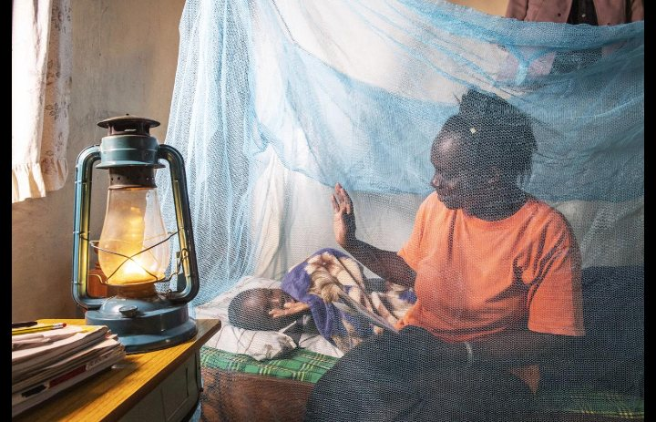
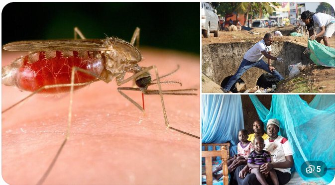

Health
The Mosquito Menace: How Environmental Management Can Help Protect Rongo Residents from Malaria
Malaria remains an important public health concern in many parts of western Kenya. In Rongo, understanding how mosquitoes reproduce and spread the disease is an important step towards protecting families and reducing the risk of infection. Malaria is caused by parasites belonging to the Plasmodium group. The disease is transmitted to humans through the bites of infected female Anopheles mosquitoes. These mosquitoes can reproduce in suitable water habitats, making environmental management an important part of malaria prevention.

How do mosquitoes spread malaria? The malaria transmission process begins when an infected female Anopheles mosquito bites a person and transfers malaria parasites into the bloodstream. The parasites travel to the liver, multiply and later infect red blood cells. An infected person may develop symptoms such as fever, headache, chills and sweating and general body weakness. Without timely diagnosis and appropriate treatment, malaria can become severe, particularly among young children and pregnant women.

Malaria remains a major public health challenge, transmitted through the bite of infected female Anopheles mosquitoes. Community members participate in environmental clean-up activities to eliminate mosquito breeding sites, while families are encouraged to sleep under insecticide-treated mosquito nets to protect themselves against malaria. These efforts promote public awareness, disease prevention and healthier communities.
Prof. Z. Ngalo Otieno-Ayayo, Associate Professor of Biological Sciences, Rongo University His research interests include biological control of insect disease vectors and pests. He has also participated in research on integrated malaria control. Prof. Otieno-Ayayo's scientific background is particularly relevant to understanding mosquito control. His research interests include alternative approaches to controlling insect disease vectors, including the use of Bacillus thuringiensis israelensis (Bti), a biological agent used against mosquito larvae. His area of expertise highlights the importance of combining scientific research with environmental management when addressing mosquito-related diseases. Mosquitoes require suitable breeding habitats to reproduce. Water collected in discarded containers, open pits, blocked drainage channels and other suitable locations can create breeding opportunities.
The Kenya Ministry of Health recommends removing stagnant water around homes and clearing grass and bushes around residential areas as part of community malaria prevention. For residents of Rongo, regular environmental clean-ups can help reduce potential mosquito breeding sites.
Ways residents can protect themselves; Sleep under treated mosquito nets. Insecticide-treated nets provide an important barrier against mosquito bites, especially at night. Remove stagnant water. Empty containers and dispose of items that collect rainwater. Malaria prevention requires cooperation between scientists, healthcare professionals, local administrators and residents.
Scientific research helps explain mosquito behaviour and identify effective control methods. Healthcare workers provide testing, treatment and public health education, while community members can help maintain cleaner surroundings. Rongo University also provides an important local scientific resource through its Biological Sciences department, which offers training in biological sciences and public health.
Malaria prevention should not be left to healthcare facilities alone. Every household has a role to play in reducing exposure to mosquitoes and maintaining a clean environment. Preventing malaria begins with understanding the mosquito, protecting ourselves from its bites and taking responsibility for our surroundings. Prof. Z. Ngalo Otieno-Ayayo, Associate Professor of Biological Sciences, Rongo University. His university profile documents his research interests in insect disease vector control and integrated malaria control.